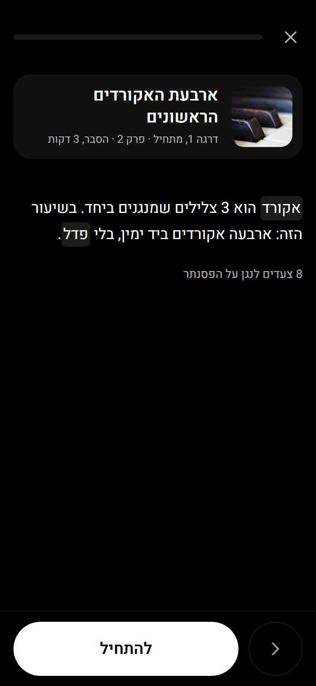
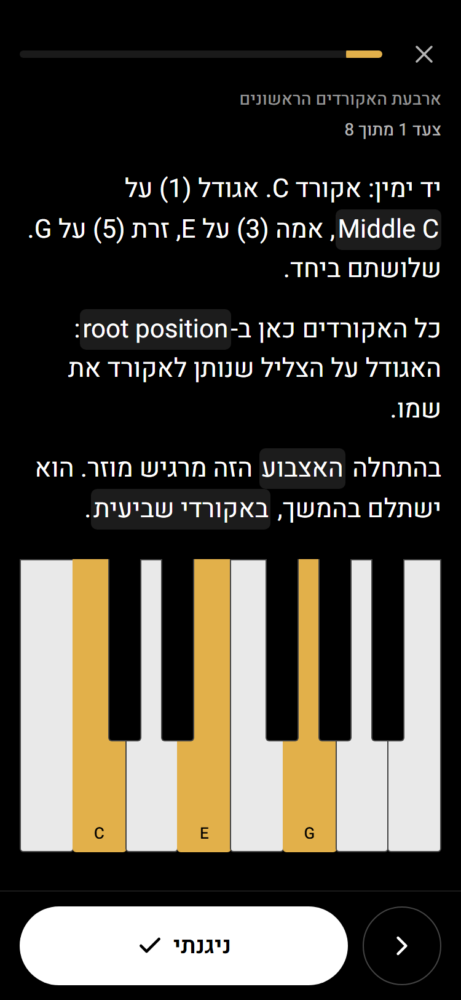
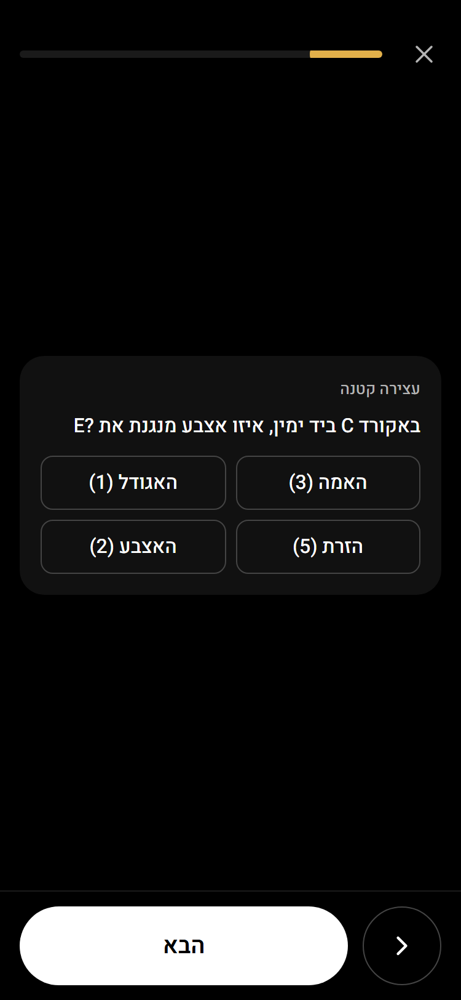
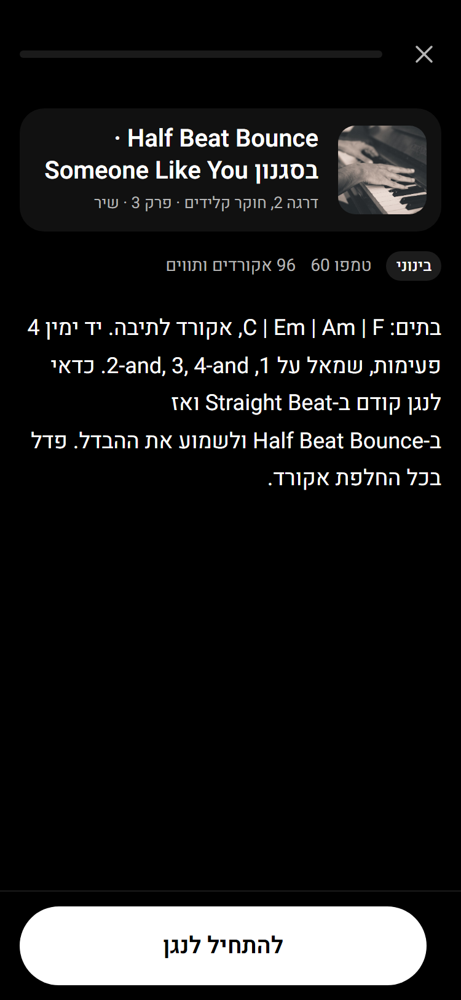
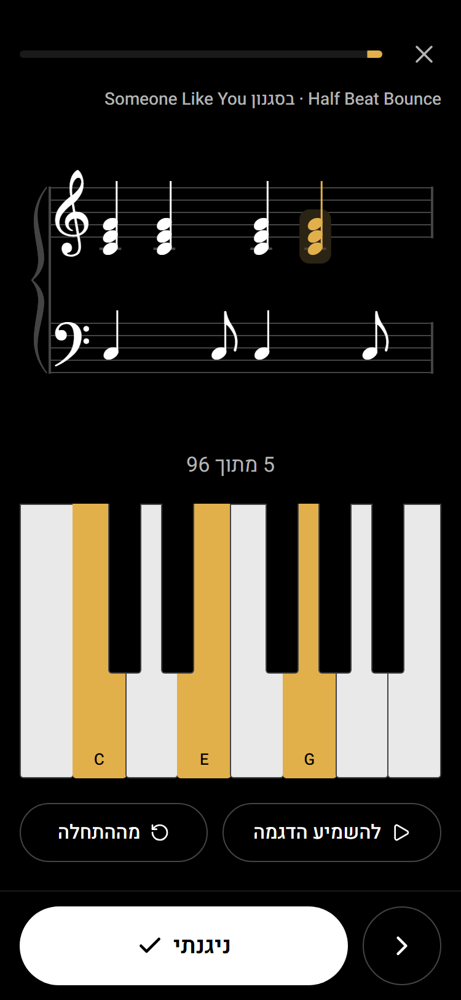
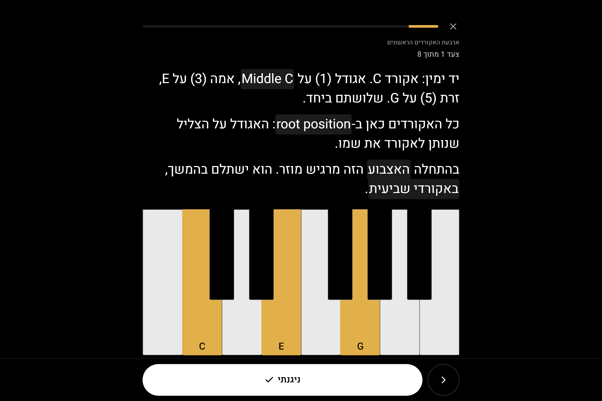
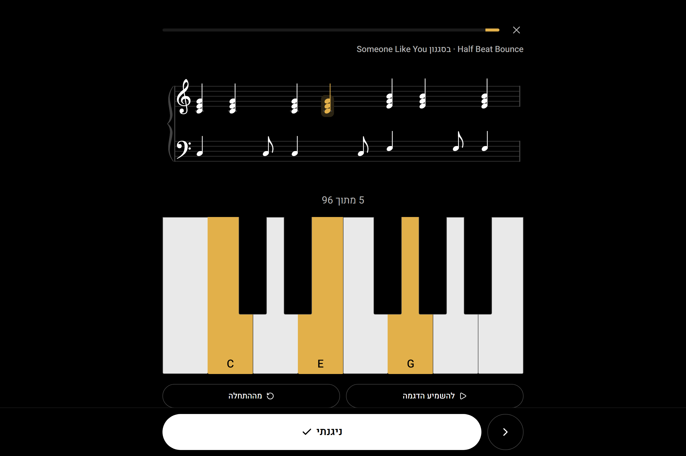

שלב 3 · מסך שקריא מהכן
טלפון 375px וסורפייס 1368px. האתר כבר מעודכן: yudisaiagent-cell.github.io/legato-looks/site
שיעור: פתיחה
העטיפה, השם והפתיחה הקצרה, וכמה צעדים יש. "להתחיל" בפס התחתון.

שיעור: צעד אחד בכל מסך
טקסט גדול (21px), המפה של האקורד ממלאת את המקום עד הפס. הפס בתחתית תמיד באותו מקום: "ניגנתי" גדול, ו"הקודם" עגול מימין.

עצירה קטנה בעמוד משלה
מיד אחרי הצעד שהיא שייכת אליו. "הבא" באותו מקום.

שיר: פתיחה
רמת קושי, טמפו, כמה אקורדים, והטקסט. "להתחיל לנגן".

שיר: מסך הנגינה
החמשה, "5 מתוך 96", והמפה של האקורד הנוכחי. הכול נכנס במסך אחד, בלי גלילה. בסוף השיר הכפתור הופך ל"סיימתי את השיר".

סורפייס, מצב כן: צעד
מסך מלא: טקסט 30px, קלידים רחבים עם שמות גדולים, בלי גלילה.

סורפייס, מצב כן: שיר
החמשה למעלה, המקלדת למטה עד הפס, כפתורי ההדגמה מעל הפס.
